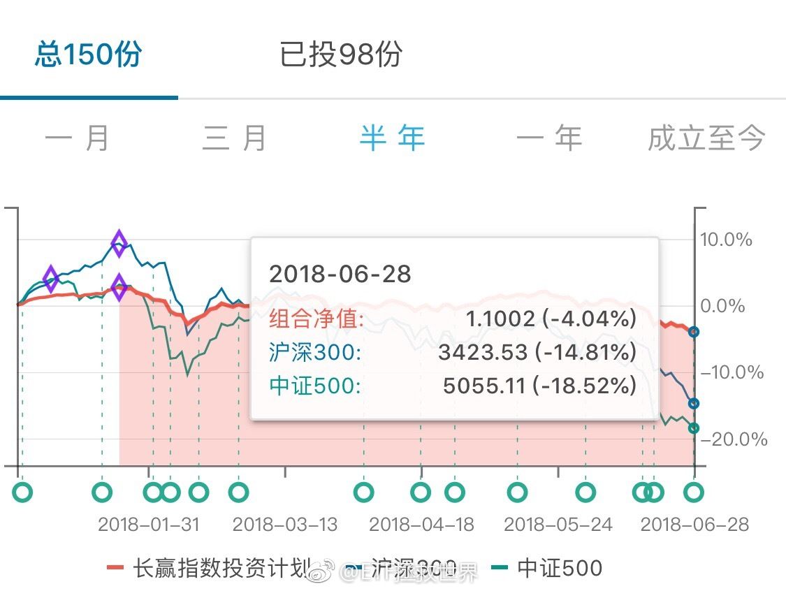
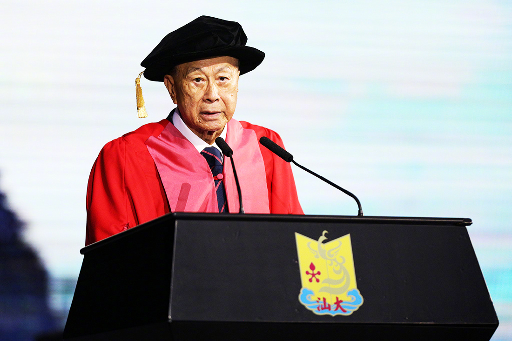

年底只要收在2900，年度就可以不亏了。如果下半年继续暴力下跌，那么年底收在2800甚至更低就可以不亏。熊市每年不亏，牛市跟上。很难实现的目标，但值得努力。//@ETF拯救世界:半年浮亏还剩3%了。今年盈利很乐观。@ETF拯救世界:计划半年成绩：A股40%多仓位，加上港股超过50%仓位。全是指数基金，这个回撤幅度算是合格。计划上次年度亏损还是2012年，今年我觉得也不会亏。 
回复@看我看我252:昨天真的写的很急。因为必须当天发车。我不瞒大家说，慌乱之中，少发了一车……//@看我看我252:益达，你是不是提前结束假期回来主持大局维稳来了。@ETF拯救世界:昨天没有申购或者买入的今天就先算了吧。这也太暴力了。或者少买点。
回复@看我看我252:某一天，我们持有的某些指数，一天就能涨8%以上。爱信不信了。//@看我看我252:太慢了，能不能来个涨停//@ETF拯救世界:队里的兄弟们悠着点啊。5%肯定到不了了。//@ETF拯救世界:有没有可能4%。//@ETF拯救世界:这么听话实在不好意思了。@ETF拯救世界:传媒今天能不能搞3%？
回复@godshan:只要是我们买的基金，就不用担心份额太少清盘。为什么我就不说了。自己体会。不信可以注意看看金融地产的半年报数据。//@godshan:回复@VX北城不夏:亲，你这回答没看懂啊，前面说不会，后面又说最近有个因为份额太少清盘了？@ETF拯救世界:债券的意义。现在懂了吧
回复@牛牛s:一天反弹什么也说明不了。目前中长期趋势没有变化。反弹是下降趋势中经常出现的，跌多了弹一下很正常。什么时候趋势扭转再说吧。//@牛牛s:E大，我伤心了，说好的熊市呢，60车资金已到位，准备大干一票，然后冬眠两年，突然没了@ETF拯救世界:计划半年成绩：A股40%多仓位，加上港股超过50%仓位。全是指数基金，这个回撤幅度算是合格。计划上次年度亏损还是2012年，今年我觉得也不会亏。
再说一次，目前有点浮亏根本不要在意。只要你相信A股在你有生之年还有牛市，那你的浮亏在牛市来临的1-2周之内会变成盈利。这个说过很多次，但是只有真的发生了你才明白是怎么回事。我说的很多东西，随着时间的推移，都一一实现。这个也不会例外。
回复@fight2021:商业上的东西不说了。太多人有所谓的“成功”。我最佩服李老板从年轻时候就信守承诺，说到的一定要做到，即使自己吃亏。到了功成名就，华人首富，依然对其它人平易近人，客客气气，毫无傲气。这些都是从各种新闻、视频、传记中感受到的。非常敬佩。@澎湃新闻:【汕头大学举行2018毕业礼，李嘉诚“谢幕”致辞】6月29日上午，汕头大学举行2018届毕业典礼。汕头大学校董会名誉主席李嘉诚出席并致辞，他将在毕业礼后辞去其职务，交棒给二儿子李泽楷，现场安排交棒仪式。 澎湃新闻的微博视频 .  106万次播放 00:00
回复@-昂昂-:历史上从没出现过这几年这种分化如此严重的情况。低的低到10倍，高的还在50多倍。从2000年开始就没出现过。后面怎么走，值得期待。@ETF拯救世界:计划半年成绩：A股40%多仓位，加上港股超过50%仓位。全是指数基金，这个回撤幅度算是合格。计划上次年度亏损还是2012年，今年我觉得也不会亏。
我的偶像之一。老了……@澎湃新闻:【汕头大学举行2018毕业礼，李嘉诚“谢幕”致辞】6月29日上午，汕头大学举行2018届毕业典礼。汕头大学校董会名誉主席李嘉诚出席并致辞，他将在毕业礼后辞去其职务，交棒给二儿子李泽楷，现场安排交棒仪式。 澎湃新闻的微博视频 . 106万次播放 00:00
回复@花花世界231:无论你能不能坚持住，不用来我这里报告。否则拉黑。其他人也一样。不好意思。别给我压力，除非你以后赚钱的时候给我分20%。//@花花世界231:目前浮亏2万＋希望自己能坚持住@ETF拯救世界:债券的意义。现在懂了吧